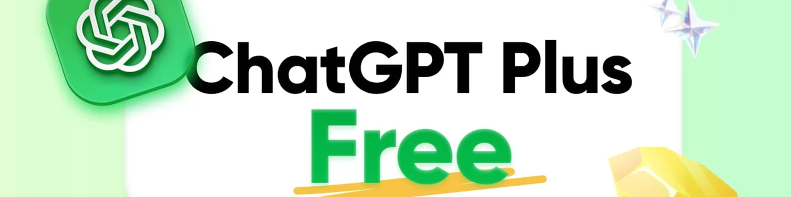

如何在 2025 年免費獲得 ChatGPT Plus（10 種行之有效的方法）
根據 DemandSage 統計，截至 2025 年，全球約有1000 萬用戶 訂閱了 ChatGPT Plus ，並且這一數字仍在快速增長。隨著 8 月份 GPT-5 的正式發布，Plus 版本的功能優勢更加凸顯。
然而，ChatGPT Plus 每月 20 美元的訂閱價格仍然讓許多用戶望而卻步。儘管互聯網上充斥著各種所謂的免費訪問方式，例如"邀請碼"和"破解插件"，但這些方式通常不僅無效，還隱藏著安全風險。
為了幫助你找到真正可行的方案，我們對網上流傳的各種方法進行了全面的評估和測試。在剔除高風險和虛假宣傳的方法後，我們找到了幾種 真實、安全且合規的 途徑，幫助你輕鬆訪問免費的 ChatGPT Plus 服務。
ChatGPT Free 和 Plus 之間有什麼區別
在找到合適的免費訪問方式之前，務必了解 Plus 比免費版的優勢，並確定ChatGPT Plus 是否符合你的需求。這樣，你才能決定它是否真的值得一試。
ChatGPT 免費版本提供的功能
免費版支持 日常對話 和 基本任務處理 。對於需要更深層次推理的問題，你還可以每天使用一次 GPT-5 思維模式。
它包含語音對話、文件上傳和圖像生成功能。但是，消息配額和一些高級功能存在限制。高峰時段還可能遇到排隊或限流的情況。
總體而言，免費版滿足輕度使用需求，讓用戶體驗ChatGPT的核心功能，但在功能完整性 和 使用穩定性 方面有所欠缺。
ChatGPT Plus 優勢
升級到 Plus 版可解鎖免費版中完全不可用或受限的一系列功能：
- 更高的使用限制 ：Plus 用戶每 3 小時最多可發送 160 條消息，而免費用戶每 5 小時最多可發送 10 條消息。Plus 用戶可以訪問 GPT-5，主動切換到 GPT-4o，並隨時使用思考模式。這使其非常適合長時間對話和複雜推理。
- 更強大的多模態功能 ：Plus 用戶每 3 小時最多可生成 50 張圖片，而免費用戶每天僅能生成 2-3 張圖片。Plus 用戶還可以使用 Sora 視頻功能，進一步擴展 AI 使用場景。
- 更快的響應時間 ：在高峰時段，Plus 用戶享有優先訪問權，確保更快、更穩定的響應，不受服務器擁塞限制。
- 更多高級功能 ：包括創建和使用自定義 GPT、訪問 ChatGPT 代理以及更豐富的任務和項目管理工具，以實現更高效的工作流程。
ChatGPT Free 與 Plus 對比
總體而言，ChatGPT 免費版和 Plus 之間的區別主要集中在以下幾個關鍵方面：
| 物品 | 自由的 | Plus（20 美元/月） |
|---|---|---|
| 消息限制（GPT-5） | 每 5 小時約 10 次 | 每3小時約160 |
| 消息限制（GPT-5 思考） | 每天僅自動觸發一次 | 可手動選擇，每週最多約 3，000 個 |
| 舊款 | 無法使用 | 可以手動切換到 GPT-4o |
| 響應速度 | 繁忙時段通常限制 | 高峰時段優先訪問，響應更快 |
| 高級功能 | 有限制的基本工具 | 完全訪問內存、瀏覽、文件上傳、GPT、插件和語音 |
| 代理功能 | 無法使用 | 可用的 |
| Sora 視頻生成 | 無法使用 | 可用的 |
由此可見，ChatGPT 免費版與 Plus 之間的差距不僅僅在於模型使用限制或響應速度。Plus 提供的先進工具、交互靈活性以及整體體驗往往決定了你使用時的效率和舒適度。
雖然普通用戶可能不會發現這些功能有太大的價值，但如果你依靠 ChatGPT 進行寫作、研究、內容創作或類似任務，這些功能通常會在效率和用戶體驗方面發揮重要作用。
你可以在 2025 年免費獲得 ChatGPT Plus 嗎？
答案是肯定的 。OpenAI 確實通過試用邀請、教育折扣和促銷合作等方式提供免費訪問機會。然而，這些機會通常有 時間限制，或者只對 特定群體 開放。
ChatGPT Plus 於 2023 年首次推出時，由於其獨特的成本結構，它並 沒有像許多其他程序那樣提供為期一個月的免費試用。正如 OpenAI 首席執行官 Sam Altman 所指出的，運行高級 AI 模型的計算成本" 高得驚人"。
這使得大規模免費試用在經濟上不可持續，而付費訂閱對於支付高昂的運營成本和支持未來的改進至關重要。
隨著人工智慧競爭的加劇，OpenAI 變得更加 靈活 。它現在為開發人員提供免費的 API 積分，通過大學進行學術試驗，並與公司建立合作夥伴關係，將 Plus 作為員工福利。
這些舉措擴大了 ChatGPT Plus 的用戶群，讓更多人體驗先進的人工智慧，並使商業模式保持可持續性。
如何免費獲取 ChatGPT Plus
ChatGPT Plus 免費試用邀請

免費體驗 Plus 最直接的方式來自於OpenAI 官方的邀請系統。符合條件的 ChatGPT Plus 用戶可以生成有限數量的邀請碼,為其他用戶提供 7-14 天 的完整 Plus 訪問權限。
另外，擁有推薦權限的用戶可以在 ChatGPT 界面左下方找到" 邀請好友"選項，生成專屬邀請鏈接進行分享。
作為受邀用戶，請記住以下幾點：
- 如何獲取 ：首先詢問你周圍的 Plus 用戶是否有可用的邀請名額。你也可以查看 Reddit 的 ChatGPT 討論區或 X 上的相關主題，人們經常在這些地方分享鏈接。
- 要求 ：註冊時需要關聯信用卡，但試用期間無需支付任何費用。試用到期前，你會收到 OpenAI 發送的提醒郵件，並且可以隨時取消。
- 時間限制：大多數邀請鏈接僅在 48 小時 內有效，因此請盡快激活。請務必驗證鏈接是否指向 OpenAI 的官方域名，以免被釣魚網站攻擊。
Rappi Pro 黑色合作夥伴關係

除了官方邀請之外，拉美外賣平台 Rappi 也與 OpenAI 展開合作。從 2025 年 7 月 15 日至 2026 年 1 月 15 日 ，Rappi Pro Black 訂閱用戶可獲得 6 個月 的免費 ChatGPT Plus 訪問權限，總限額為 30 萬個名額 。
註冊 Rappi Pro Black 後，用戶可以通過應用程序或電子郵件激活 ChatGPT Plus。通常在激活後 48 小時內，你會收到一封電子郵件，其中包含可在 ChatGPT 帳戶中兌換代碼的鏈接。
現有的 Pro Black 會員應盡快領取，以免名額售罄。非訂閱者只需支付8-11 美元 即可註冊，比直接購買 ChatGPT Plus 便宜得多。
請記住，你必須維持 Rappi Pro Black 訂閱整整 6 個月，否則你的 ChatGPT Plus 福利也將被取消。
Grab 東南亞合作夥伴關係

新加坡超級應用Grab 也與 OpenAI 合作，為東南亞用戶提供服務。訂閱 GrabUnlimited 後，用戶可獲得額外福利，包括 1 個月的免費 ChatGPT Plus 訪問權限 。
GrabUnlimited每月 僅需約6 美元，遠低於 ChatGPT Plus 官方 20 美元的月費。會員還享有 Viu Premium 和獨家旅行折扣等其他福利。
該計劃目前覆蓋 新加坡、馬來西亞、泰國、印度尼西亞和菲律賓 ，具體條款因市場而異。如果你位於這些國家/地區，請留意 Grab App 中的促銷信息。
環球巴士 ChatGPT Plus 帳戶

相比之前提到的官方邀請或者合作模式， 環球巴士 的做法更加簡單穩定 ，通過訂閱共享的方式，將官方服務的費用分攤給多個用戶，從而大幅降低個人成本。
為了驗證平台的可靠性，我在測試期間連續使用了一個月。整體體驗非常流暢。登錄後，可以直接訪問 GPT-5 對話、語音交互等功能。響應速度與官方訂閱服務相當，沒有遇到任何斷線或配額限制的情況。
價格方面，環球巴士 的ChatGPT 共享帳戶價格在 7 美元左右，僅為官方 20 美元售價的三分之一，而且這種方式沒有試用或促銷的時間限制， 更適合長期使用 。
學生教育折扣計劃

2025年3月至5月期間，OpenAI在美國和加拿大開展了一項學生折扣試點項目。當時，符合條件的全日制或非全日制大學生可以通過SheerID驗證身份，獲得 兩個月的ChatGPT Plus免費試用。
OpenAI 稱其為一項"實驗性消費者計劃"，並在條款中暗示，類似的折扣未來可能會擴展到更多學校和國家。雖然這項活動已於 5 月結束，但這表明 OpenAI 正在探索 針對學生用戶的長期折扣 。
如果你是學生，請關注校園公告或 OpenAI 官方更新。折扣恢復後，你將再次有機會免費領取 ChatGPT Plus。
ChatGPT 促銷代碼和限時優惠
OpenAI 偶爾會通過合作夥伴分發促銷代碼。用戶可以通過短信或合作夥伴門戶領取這些代碼，然後使用專屬鏈接登錄或創建 ChatGPT 帳戶，即可享受自動結賬折扣。
這些優惠通常出現在與大型科技公司聯合促銷或 ChatGPT 產品重大升級 期間。它們的形式包括首月免費、限時折扣或額外使用時間。它們通常僅適用於新用戶，並且有一定的資格限制和有效期。
要搶先獲取這些信息，請關注 OpenAI 的官方渠道、LinkedIn 以及 各大科技媒體 。務必核實信息來源的可靠性，避免虛假鏈接或詐騙。
OpenAI API 新用戶免費積分
對於具有一定技術背景的用戶，OpenAI 為新用戶提供的免費 API 積分是另一個不錯的選擇。註冊 API 帳戶後，新用戶可獲得 5-18 美元 的免費使用積分。雖然這不是直接的 ChatGPT Plus 訂閱，但你可以在通過 API 調用體驗 GPT-5 和其他高級模型。
申請流程很簡單：
- 訪問 platform.openai.com 註冊開發者帳戶
- 完成電話驗證和身份確認
- 在儀表板中查看你的免費積分
免費積分的有效期取決於你的使用頻率。對於日常對話，它可以支持大約 200-300 輪 GPT-5 對話，足夠輕度用戶使用一個月。
如何免費獲取 ChatGPT-5
如果你獲取 ChatGPT Plus 的主要目的只是為了使用 GPT-5，而並不特別需要其他功能，那麼實際上有更簡單的替代方案，可讓你免費使用 ChatGPT-5，而無需購買 Plus。
如何通過 環球巴士 使用 ChatGPT
環球巴士是一個多AI模型平台，新用戶註冊後會自動獲得 免費積分 ，可直接用於 GPT-5 對話。
除了GPT-5之外，你還可以體驗包括Claude 4 、 Gemini 2.5 Pro 在內的多種主流AI模型，輕鬆比較它們在不同任務中的表現。
即使免費積分用完，環球巴士 仍然物超所值。只需 11 美元即可獲得 240 次 GPT-5 對話，比官方訂閱便宜得多。
如何通過 Microsoft Copilot 免費使用 ChatGPT
自 2025 年 8 月 7 日 起，GPT-5 已完全集成到 Microsoft 365 Copilot 中。無論你是否擁有 Copilot 許可證，都可以直接通過 Microsoft 365 的 Copilot 頻道體驗 GPT-5，但訪問級別有所不同：
擁有 Copilot 許可證的用戶 可獲得 優先訪問權限 ，並可在 Word、Outlook、Teams 和其他應用程序中充分使用 GPT-5，包括對話和高級功能。
沒有許可證的用戶 仍然可以使用 GPT-5，但只能使用 標準訪問權限 。這意味著功能和穩定性會受到限制，每日對話限制會根據服務器容量和高峰使用時間而波動。
如何通過 Perplexity AI 免費使用 ChatGPT
如果你更喜歡在搜索和信息檢索場景中使用 AI，你可以 通過 Perplexity AI 免費使用 GPT-5 。
免費用戶每天可獲得 5 次專業搜索查詢，你可以從模型選項中直接訪問 GPT-5。
升級到Perplexity Pro不僅可以完全解鎖 GPT-5，還能訪問 Gemini 2.5 Pro、Grok 4 和其他頂級型號。只需一次訂閱，即可獲得多個平台的核心功能。
比較免費聊天GPT方法
讀完所有這些"免費的 ChatGPT"方法後，你可能會感到有些不知所措。為了幫助你更輕鬆地進行比較，我們將常用方法整理成一個比較表，清晰地顯示了每種方法的持續時間、優點和局限性，以便你快速確定哪種方法最適合你。
| 渠道 | 期間 | 優點 | 缺點 | 等級 |
|---|---|---|---|---|
| 邀請試用和 API 積分 | 7-14 天 & 5-18 美元積分 | 官方渠道 | 短期 | ⭐⭐⭐ |
| Rappi 和 Grab 促銷 | 6個月和1個月 | 長期、正式的合作關係 | 需要訂閱，區域限制 | ⭐⭐⭐⭐ |
| 環球巴士 ChatGPT Plus | 長期 | 價格低廉，長期使用穩定 | 非常受歡迎，可能會售完 | ⭐⭐⭐⭐⭐ |
| 學生折扣 | 2個月 | 官方渠道 | 僅限學生，目前已結束 | ⭐⭐ |
| ChatGPT 促銷代碼 | 各不相同 | 官方折扣，形式多樣 | 難以獲得，並不總是有效 | ⭐⭐ |
| Perplexity | 長期 | 始終可用 | 功能有限，每日上限 | ⭐⭐⭐ |
如果你只想短期試用，官方邀請是一個可靠的選擇。在受支持的地区，Rappi 或 Grab 等合作計劃也能提供不錯的選擇。對於長期使用，環球巴士 提供了最穩定、最經濟的解決方案。
總的來說，每種方法都有自己的優勢，因此關鍵在於根據你的特定需求和使用頻率進行選擇。
結論
確實存在免費訪問 ChatGPT Plus 的方式，無論是通過 OpenAI 的不定期試用邀請、合作夥伴限時促銷，還是學生教育折扣。這些方式可以讓你短期內訪問 GPT-5 的完整功能。
但如果你的目標是長期、穩定地使用 ChatGPT Plus，在親自測試了各種方法之後，我還是建議通過環球巴士獲取 ChatGPT Plus 帳號。 安全 可靠 ，省錢又 省心 。
此外，通過Rita AI免費使用 ChatGPT也值得一試。這免去了不斷尋找臨時試用版的麻煩，讓你在一個平台上體驗多種 AI 模型，涵蓋對話、圖像生成、視頻等，從而實現全面高效的工作。
如果將來出現新的免費頻道，我會繼續在此更新此信息，以便你隨時了解最新的選擇。
常問問題
ChatGPT 有免費試用版嗎？
是的。OpenAI 會定期通過官方邀請或合作夥伴提供 ChatGPT Plus 免費試用。這些試用版提供完整的 GPT-5 訪問權限，通常持續 7-14 天，有時在更新或促銷期間會更長。
ChatGPT Premium 對學生免費嗎？
目前，學生折扣尚無永久性優惠。不過，OpenAI 已於 2025 年春季進行了一項試點，為符合條件的美國和加拿大大學生提供經過 SheerID 驗證後兩個月的免費 ChatGPT Plus 服務。雖然該項目已結束，但它可能會擴展到更多學校和地區。
有沒有辦法免費獲得 ChatGPT Plus？
常見的方式包括官方邀請試用、通過 Rappi、Grab 等平台的合作推廣、高校教育優惠以及節假日發放的優惠碼等。通過這些渠道，用戶通常可以獲得 1-6 個月的免費 ChatGPT Plus 訪問權限。